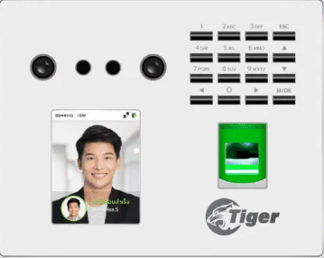
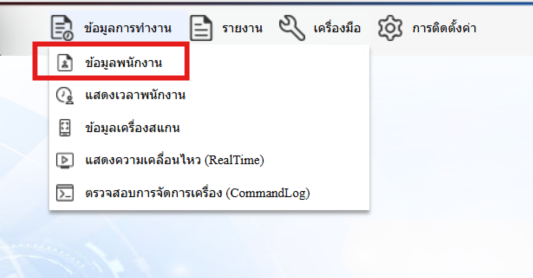
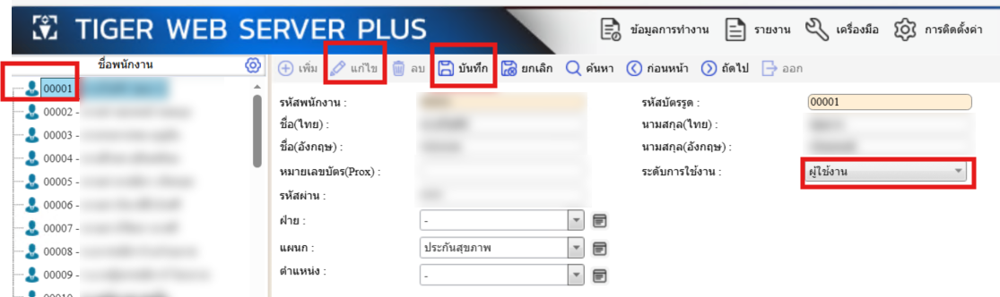

ทำตามขั้นตอนด้านล่างให้ครบทุกขั้นตอน
เพิ่มข้อมูลพนักงานที่เครื่องสแกน แล้วจดรหัสพนักงาน (ID) เก็บไว้เพื่อใช้ในขั้นตอนถัดไป

เปิดเว็บเบราว์เซอร์ แล้วไปที่ URL ด้านล่าง จากนั้นเข้าสู่ระบบด้วยชื่อผู้ใช้และรหัสผ่าน
http://192.168.44.8/TigerWebServerPlus/Account/Login.aspx
เมื่อเข้าสู่ระบบแล้ว ให้คลิกที่เมนู "ข้อมูลพนักงาน"

ดำเนินการตามลำดับขั้นตอนต่อไปนี้:
